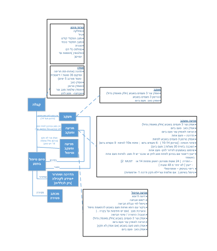

<!--<app-loading-screen></app-loading-screen>-->
<mat-sidenav-container style="position: relative" class="sidenav-container">

    <mat-sidenav #drawer class="sidenav" fixedInViewport="false" [attr.role]="(isHandset$ | async) ? 'dialog' : 'navigation'" [mode]="(isHandset$ | async) ? 'over' : 'side'" [opened]="!(isHandset$ | async)">
        <mat-toolbar color="red">Menu</mat-toolbar>
        <mat-nav-list>
            <a mat-list-item href="" (select)="startNav()"  [routerLink]="['admission']" [queryParams]="{title: mainRequest, si: true}">Admission</a>
            <a mat-list-item href="" (select)="startNav()"  [routerLink]="['followup']" [queryParams]="{title: mainRequest, si: true}">Follow Up</a>
            <a mat-list-item href="" (select)="startNav()"  [routerLink]="['prevention']" [queryParams]="{title: mainRequest, si: true}">Followup And Prevention</a>
            <a mat-list-item href="" (select)="startNav()"  [routerLink]="['treatment']" [queryParams]="{title: mainRequest, si: true}">Followup, Prevention And Treatment</a>
          <a mat-list-item href="" (select)="startNav()" [routerLink]="['bandage']" [queryParams]="{title: mainRequest, si: true}">Bandage</a>
          <a mat-list-item href="" (select)="startNav()"  [routerLink]="['summary']" [queryParams]="{title: mainRequest, si: true}">Summary</a>

          <!--<a mat-list-item href="" [routerLink]="['bandaging']" [queryParams]="{title: mainRequest, si: true}">Bandaging</a>-->
          <!--<a mat-list-item href="" > <i style="size: 25px" class="fa fa-notes-medical"></i></a> &lt;!&ndash; (click)="firstModal.open(); $event.stopPropagation()"&ndash;&gt;-->

        </mat-nav-list>
    </mat-sidenav>
    <mat-sidenav-content>
<!--      <div *ngIf="ShowLoad">Loading...</div>-->
      <router-outlet *ngIf="!serched"></router-outlet>
    </mat-sidenav-content>
</mat-sidenav-container>


<!--<modal #firstModal >-->
  <!--<modal-header>-->
    <!--<h1>Protocol</h1>-->
  <!--</modal-header>-->
  <!--<modal-content>-->
    <!---->
  <!--</modal-content>-->
  <!--<modal-footer>-->
    <!--<button class="btn btn-primary" (click)="firstModal.close()">okay!</button>-->
  <!--</modal-footer>-->
<!--</modal>-->
